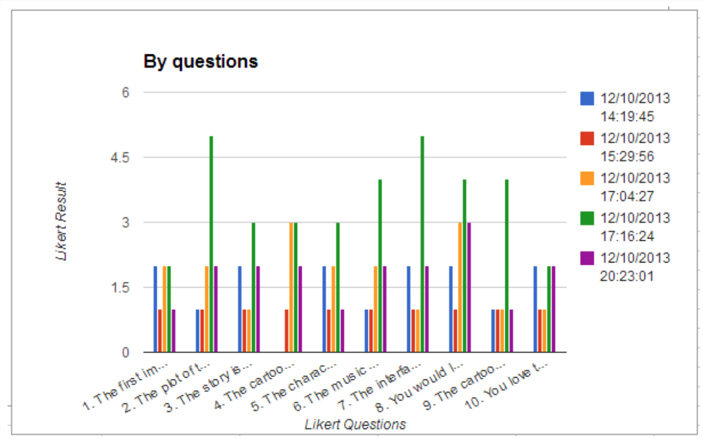
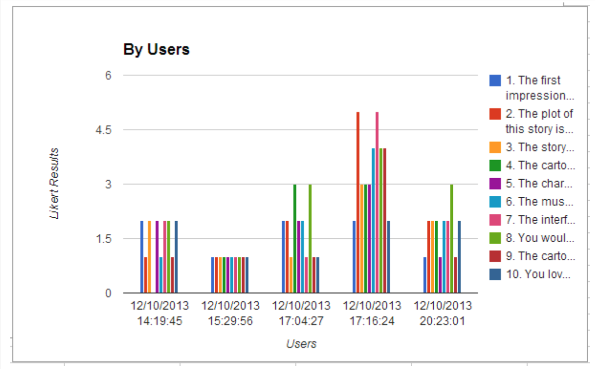

Wildwood night - A interactive storybook for children
DemoWildwood Night is a interactive cartoon story specialized for children. The story is original, describing a girl’s interesting adventure in the night of wildwood which might have been thought by everyone when they were young. It mixes cartoon, animation, text, sound elements, aiming to stimulate kids’ interests in reading and imagination. Through this story, children can have fun, gain imagination and learn to read at the same time.
Story Draft

Interactive Animation
Animation as well as the character design is based on Flash CS3, along with some ActionScript 3.0 language. Animation version has seven situations, one more situation is added for panel two of draft. The process of generating animation in flash is like this: Firstly, design characters and sceneries using basic graphic tools in flash, and then, make these characters move in the way that they are supposed to be, finally, combine all the characters into bigger sceneries, if needed, add some movement to sceneries.
Interview
Five people were recruited to interact with the story and asked to take a questionnaire of ten questions. The questionnaire is based on Likert scale surveying the level of attractiveness and user-friendliness of this product from character design to interactive interfaces. Due to some usability limitations, we could not test the interactive story on children.
 